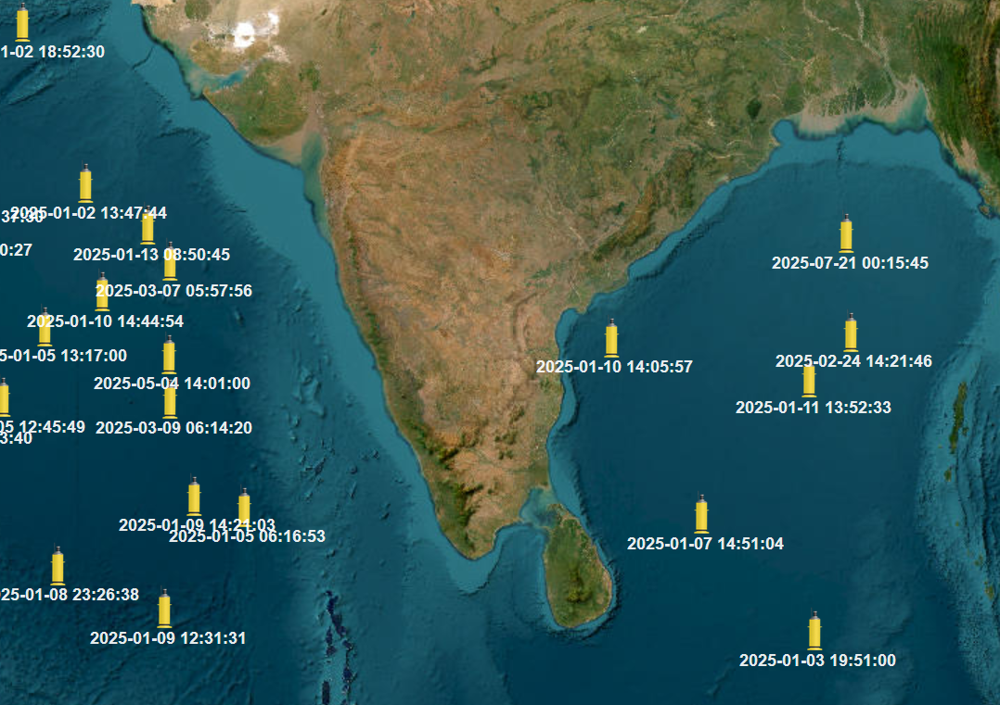
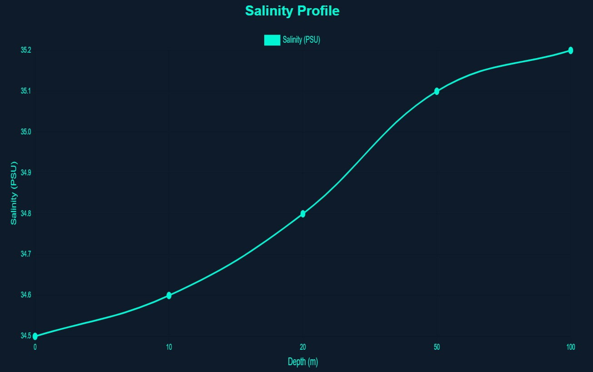

Query Parameters
Results

Salinity has shown a gradual increase of 1.2% with depth.
Data Table
| Depth(m) | Salinity (PSU) | Temperature (°C) | Oxygen (mg/L) | pH | Nitrate (μmol/L) | Pressure (dbar) |
|---|---|---|---|---|---|---|
| 0 | 34.8 | 15.2 | 6.8 | 8.05 | 5.1 | 1012 |
| 10 | 34.9 | 15.3 | 6.7 | 8.06 | 5.3 | 1011 |
| 20 | 35.0 | 15.5 | 6.6 | 8.05 | 5.2 | 1013 |
| 50 | 35.1 | 15.6 | 6.7 | 8.07 | 5.4 | 1014 |
| 100 | 35.2 | 15.7 | 6.8 | 8.08 | 5.5 | 1013 |